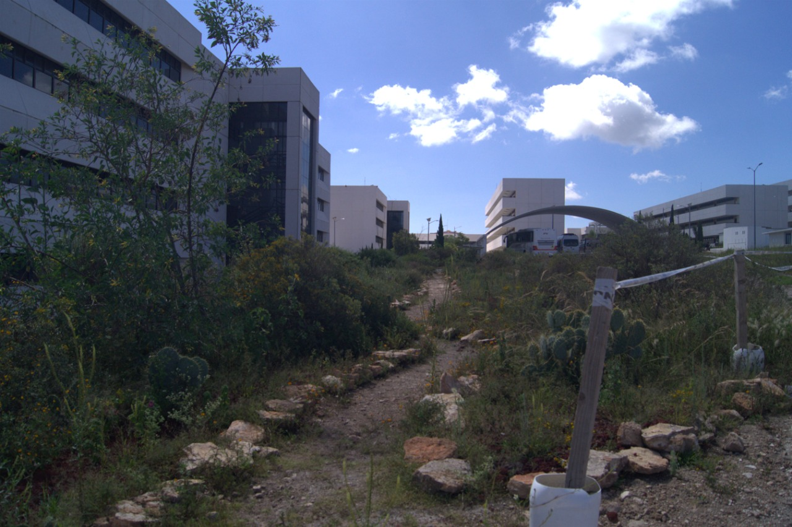
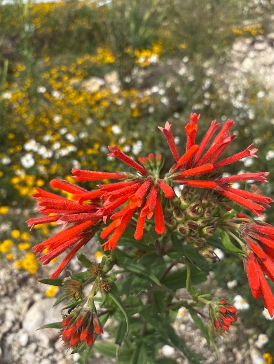
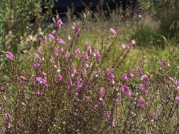
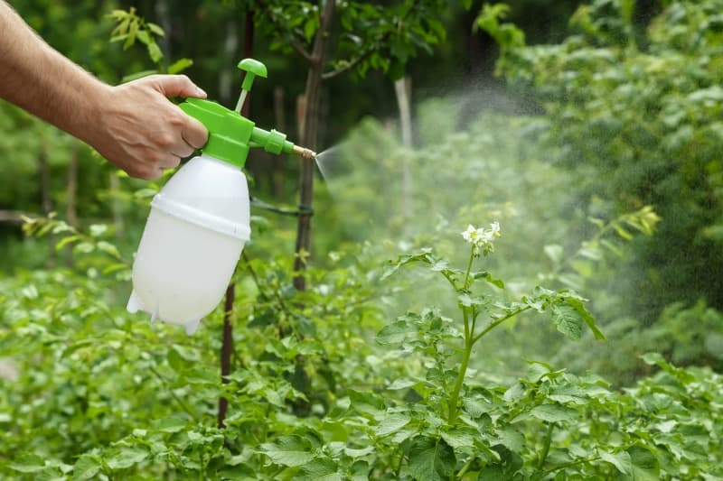

Un espacio de aprendizaje y conservación
El Jardín Vivo del CECyT es un proyecto que combina ciencia, ecología y educación. Aquí encontrarás desde especies nativas que contribuyen al equilibrio ambiental, hasta plantas utilizadas en la medicina tradicional o la investigación científica.
Nuestro jardín ecológico dentro del CECyT.

Diversidad de especies cultivadas.
Explora nuestras secciones

Tipos de Plantas
Conoce las principales categorías: herbáceas, arbustivas y cactáceas, con ejemplos y fotografías.

Plantas del CECyT
Descubre las especies que crecen en nuestro propio jardín y su importancia ecológica.
Planta del Mes
Cada mes, una planta protagonista: sus características, cuidados y curiosidades.

Biopreparadores
Aprende sobre extractos naturales, biofertilizantes y preparados ecológicos.